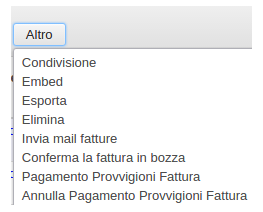
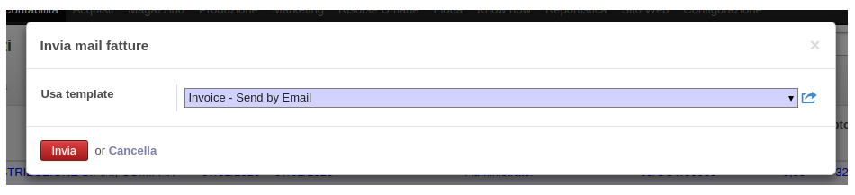

Funzioni principali del modulo
Questo modulo permette l'invio massivo delle mail fatture di vendita.
E' stato creato un wizard che permette di selezionare vari template di invio:
Quando vengono selezionate le fatture, nel bottone "Altro" che compare, é stata aggiunta
la voce:
"Invia mail fatture"
Se una fattura non contiene l'email del cliente, viene restituito un messaggio di errore:

Altrimenti si apre il wizard sopracitato, in cui viene data la possibilitá di scegliere i template di invio email:

